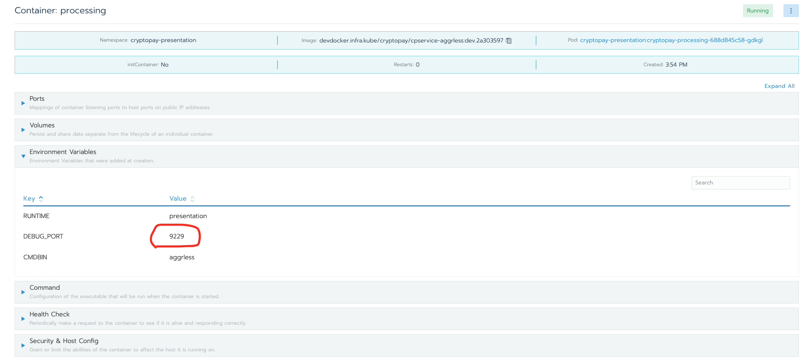

Debugging inside Kubernetes
Иногда нужно провести отладку приложения внутри Kubetnetes. Это сделать довольно просто...
Чек-лист:
- Установленный локально
kubectl - Приложение запущено внутри Kubetnetes в режиме дебага
- VSCode конфигурация запуска в режиме
Attach - Версия приложения соответствует исходникам
Подготовка (единоразово)
Конфигурация kubectl
-
Конфигурация
~/.kube/config, выглядит так (API Token, для своего аккаунта, можно создать в Rancher https://rancher-dev.itdep.org/apikeys):apiVersion: v1 clusters: - cluster: certificate-authority-data: LS0tLS1CRUdJTiBDRVJUSUZJQ0FURS0tLS0tCk1JSURsakNDQW42Z0F3SUJBZ0lVRDI0enVvT1FOQXVJUDl5ajRxdmdyQWdNeHdNd0RRWUpLb1pJaHZjTkFRRUwKQlFBd0xURVdNQlFHQTFVRUNnd05WMDVDSUZOdmJIVjBhVzl1Y3pFVE1CRUdBMVVFQXd3S1NXNW1jbUZYVGtKRApRVEFlRncweE9UQTRNRGN4TlRJME1URmFGdzB5T1RBNE1EUXhOVEkwTVRGYU1DMHhGakFVQmdOVkJBb01EVmRPClFpQlRiMngxZEdsdmJuTXhFekFSQmdOVkJBTU1Da2x1Wm5KaFYwNUNRMEV3Z2dFaU1BMEdDU3FHU0liM0RRRUIKQVFVQUE0SUJEd0F3Z2dFS0FvSUJBUURXN1Y3dVhlSnQxdTE5Y3QvWHFvbTVQSFBKQmJYRlNKemttWmI5T0d3eQpPODhCL0VCa0xkT3JZRzZ5Vmg4MWJSTTJCQWhZZTRrV1E3R3h2MCs4SVZabHZPcjE1aXpCTHlBajZISjcyUzY1Cm11Uk5IQzlzL3pHdDVVKzNMc3I3aGM3cGMxbFNYYzIrQ1V1RmdTK3BPd1ZmNGJ0eEN2dWtPVUdnT1hlbnlLM3kKd1BOSlBXRENOK1pmZS9hR0t1M1F6K2hadXF2Sk1FMTBGWk42RUdsK1BGdXFMZmJ1Yjh1T0ljUVVWK0JheS96bwpMTTFNNWgvVG1jczBRY1JrazNkRmFEMms1WXRCUnp4R0dSSVpmQmJBdnhyV0ZwZGNSQUdYRXNUSDdGODVHOSt1CjArZTRPLzZCMWRseHBaMnh0Y3lsRWh5dkcvUkxKWWNNTXBZb1VYYUhTbFl2QWdNQkFBR2pnYTB3Z2Fvd0R3WUQKVlIwVEFRSC9CQVV3QXdFQi96QU9CZ05WSFE4QkFmOEVCQU1DQVFZd0hRWURWUjBPQkJZRUZONzl5NklBRXpTawpUdlAwNzA3YkpaOXBpbWxyTUdnR0ExVWRJd1JoTUYrQUZONzl5NklBRXpTa1R2UDA3MDdiSlo5cGltbHJvVEdrCkx6QXRNUll3RkFZRFZRUUtEQTFYVGtJZ1UyOXNkWFJwYjI1ek1STXdFUVlEVlFRRERBcEpibVp5WVZkT1FrTkIKZ2hRUGJqTzZnNUEwQzRnLzNLUGlxK0NzQ0F6SEF6QU5CZ2txaGtpRzl3MEJBUXNGQUFPQ0FRRUFleXJHc0xVego0bWhzVWgyNVRSK0VGTTQ3UXBrTzV2a0NvUjdFeTROQkRhUHdyZUN2bE1mVkg2cDdMbVZOUmpQdlpaM1h1Unk0CklmeGFxR1BXMWF5RlN5d1QvN3NRdVBsR0VSb1ZTRnBpUDUydGcxZ0hFaFlNcnc1YUxOai8xdnRSZlNYd2NiZzgKZmNnc0gySkZFN29lU3JKaVlDei9LY1FMQ2grR2NST0RzaDZicGxBUTlUL0RaNlJzYU91d3BOL0d1eU9kSlJNVQpoSnVpTkdlNUY2OHNDdThBRzlwWWdQZlBrczZoU1NPaldidDJSYmRSdkQ1TzI3RTl4WnBOM29NV2xudmVOVGNECnNMUStMZkRPRHk4cGFkdDJQM0dnV2ovUlRuNHlBSXZ0dlVKZzkrSHFwcUlZbXE1SEFOelc4NW9OR1RnNy9LT0gKcUJITEk3QW9NK1ltbEE9PQotLS0tLUVORCBDRVJUSUZJQ0FURS0tLS0t server: https://rancher-dev.itdep.org/k8s/clusters/c-6nlvp name: cexiolabs-dev contexts: - context: cluster: cexiolabs-dev namespace: cryptopay-infra user: manurin name: cpinf - context: cluster: cexiolabs-dev namespace: cryptopay-evolution user: manurin name: cpevo - context: cluster: cexiolabs-dev namespace: cryptopay-presentation user: manurin name: cpprs - context: cluster: cexiolabs-dev namespace: cryptopay-preproduction user: manurin name: cppreprd current-context: cpprs kind: Config users: - name: manurin user: token: "token-xxxxx:xxxxxxxxxxxxxxxxxxxxxxxxxxxxxxxxxxxxxxxxxxxxxxxxxxxxxx" -
Проверить текущий контекст (контекст указывает на
namespaceвнутри Kubernetes):$ kubectl config current-context cpevo -
При необходимости переключится не желаемый контекст, например
cpinf,cpevo,cpprsилиcppreprd(см. список контекстов в своем конфиге~/.kube/config):$ kubectl config use-context cpprs Switched to context "cpprs". -
Проверить список Pod-ов (должны увидеть желаемый, для отладки, Pod)
$ kubectl get pods -o wide NAME READY STATUS RESTARTS AGE IP NODE NOMINATED NODE READINESS GATES cryptopay-dashboard-6cc44c9d6c-2gwbr 1/1 Running 0 32m 10.42.20.95 vm26dev <none> <none> cryptopay-processing-77cfbd7444-l7lwp 2/2 Running 0 32m 10.42.13.134 vm21dev <none> <none> migration-dev.57e5a60e-install-4mfjd 0/1 Completed 0 156m 10.42.5.101 vm29dev <none> <none> migration-dev.57e5a60e-rollback-pkcxm 0/1 Completed 0 160m 10.42.22.90 vm28dev <none> <none> tiller-deploy-7bf4c66f97-qtdgf 1/1 Running 0 17d 10.42.2.246 vm23dev <none> <none>
Приложение в дебаг-режиме
Шаг можно пропустить
Наши сервисы запущены в режиме дебага, и не требуют дополнительных настроек. Вам нужно лишь знать TCP порт на котором NodeJS ожидает подключение. Порты конкретного приложения можно посмотреть в деплоймент Helm Chart или просто в Rancher. 
{kind=link}
Для запуска NodeJS приложения в дебаг-режиме достаточно передавать NodeJS процессу аргумент --inspect=0.0.0.0:XXXX, где XXXX номер порта на котором NodeJS подымает WebSocket ендпоинт. Далее дебаггер-клиенту (например VSCode) нужно подключится к этому порту.
Конфигурация VSCode
Для подключения к удаленному процессу к файле конфигурации .vscode/launch.json нужно добавить следующую секцию:
{
"name": "Attach (127.0.0.1:9229)",
"type": "node",
"request": "attach",
"port": 9229,
"address": "127.0.0.1",
"remoteRoot": "/usr/local/cexiolabs/cryptopay.processing"
},
- "port" - указывает на локальный порт, который будет проброшен к Pod
- "remoteRoot" - путь к корню приложения в контейнере, чтобы дебаггер-клиент смог сматчить удаленное приложение с исходниками
Debug
-
Пробросить локальный порт к нужному Pod
Например в
cryptopay-processing-xxxxxxxxxx-xxxxx$ kubectl port-forward "$(kubectl get pods | grep 'cryptopay-processing-' | awk '{print $1}')" 9229:XXXXXXXX- номер слушающего порта Pod-ы, на котором NodeJS ожидает дебаггер-клиентов9229- номер локального порта, куда будет подключаться дебаггер-клиент (например VSCode)
-
Cоединиться дебаггером с приложением из VSCode, через
Attach (127.0.0.1:9229) - Дебажить...